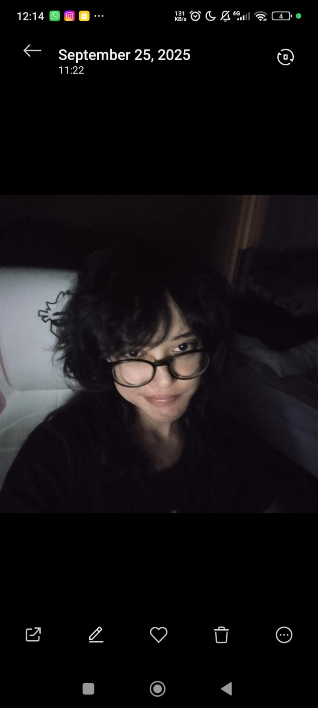

IA e dados
Design e teste de prompts, avaliação de LLMs, revisão de respostas, anotação de dados e análise de possíveis vieses.
- Prompts
- LLMs
- Qualidade de dados
Luiza Sena, IA, código e ciência
Cada planeta leva a uma seção. Ou role a página para visitar todos em ordem.
Mercúrio
Gosto de fazer perguntas, entender como as coisas funcionam e transformar esse aprendizado em algo real.
Sou engenheira de prompts e treinadora de IA, com experiência prática em avaliação e alinhamento de respostas de grandes modelos de linguagem, anotação de dados e documentação de fluxos técnicos.
Curso Ciência da Computação, Inteligência Artificial e Aprendizado de Máquina e Física. Essa combinação alimenta meu interesse por IA para descoberta científica, física computacional e tecnologias que respeitam a privacidade.
Fora dos modelos e algoritmos, também tem espaço para animes, café e criação de conteúdo: compartilhar perguntas e descobertas faz parte da minha forma de aprender.

Luiza SenaViçosa, Minas Gerais, Brasil
Vênus
Design e teste de prompts, avaliação de LLMs, revisão de respostas, anotação de dados e análise de possíveis vieses.
Aplicações web responsivas, programação, documentação e organização de projetos com controle de versão.
Aplicações locais com LM Studio e foco em privacidade. Estudos em machine learning, física e fundamentos de cibersegurança.
Terra
Uma seleção do que venho construindo.
Inteligência artificial
Aplicação de IA local e privada que conecta modelos baixados no LM Studio e permite executá-los no computador ou em um servidor próprio. A Betelgeuse foi criada para manter prompts e conversas sob o controle de quem usa, sem depender das grandes plataformas.
Desenvolvimento web
Uma aplicação para descobrir animes e mangás, com filtros por gênero e modos de navegação separados.
Desenvolvimento web
Meu portfólio pessoal: projetos, trajetória e interesses em um espaço que também tem a minha personalidade.
Ver como foi feitoMarte
Abril de 2026 até hoje, remoto
Outlier AI
Criação, teste e avaliação de prompts para grandes modelos de linguagem. Revisão de respostas, identificação de falhas e documentação de critérios de avaliação.
2025 a 2026, remoto
RWS Group
Análise e anotação de dados, avaliação de qualidade e possíveis vieses em respostas de IA, além de feedback e documentação para treinamento de modelos.
2024 a 2025, freelancer
Projeto para uma profissional de Psicologia
Planejamento, desenvolvimento e publicação de um site profissional responsivo, do conceito ao lançamento. Gestão e otimização do Perfil da Empresa no Google.
Júpiter
Bacharelado, em andamento
UNINTER, 2º ano
Conclusão prevista: 2030
Tecnólogo, em andamento
UNIASSELVI
Conclusão prevista: 1º semestre de 2029
Licenciatura, em andamento
Unicesumar
Conclusão prevista: 2º semestre de 2030
Português nativo, inglês intermediário, espanhol básico.
Saturno
107 horas, 2026
Santander Digital Immersion: Alura, FIAP, PM3 e StartSe
Cisco Networking Academy
Selo digital verificado
20 horas, 2026
Extensão universitária, UNINTER
40 horas, 2026
SENAI-MG
Urano
@shinnnji22
No meu canal, matemática e física encontram os games e o humor. Tem relatividade enquanto jogo Minecraft, limites explicados de um jeito descontraído e até uma lista da UNICAMP no meio de uma batalha contra o Sans, de Undertale.
Conhecer o canalCena decorativa: um carro acelera numa estrada conforme a página é rolada, até chegar à seção de contato.
Netuno
Sobre inteligência artificial, desenvolvimento, ciência ou uma boa recomendação de anime.
luiizan12@gmail.com